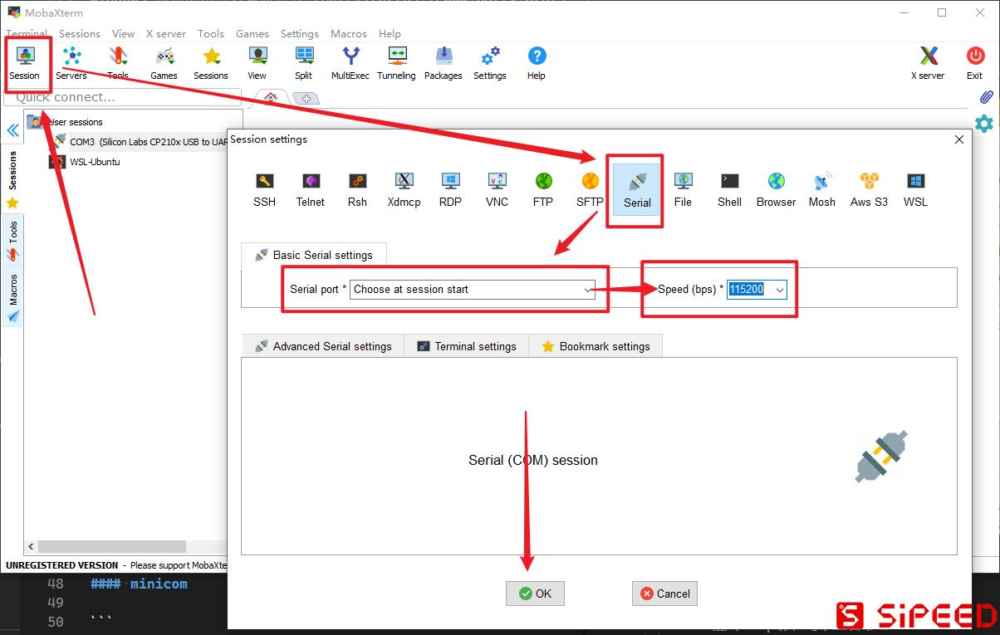

MaixII M2dock 配置系统
配置你的 Linux 系统
使用 V831 > MobaXterm_20.0 中文版（官网免费下载：MobaXterm） 连接设备串口（serial）进行系统的配置，串口设置为 115200 波特率。

截至 2021-01-26 的 V831 M2DOCK 采用的是 gd32 模拟的双串口固件，可以在进入串口后按回车确认是否选对串口，若没有反应可以按复位键确认，仍然不对，则需要切换串口再试。

在烧录镜像后第一次进入系统需要进行比较久的系统初始化（取决于 SD 卡速度），如果长达 10 分钟没有反应可以按复位键重新进入系统，若是一直不成功请通过【新手上路】【如何反馈问题】解决。
系统已经内置了 ssh 和 ftp 并在开机后自动启动，服务配置于
/etc/init.d/S40network。
进入系统后看到 root@sipeed:/# 提示就可以进行 linux 系统交互操作，输入命令 maixpy3_config.py 进行系统配置，有如下配置。
- 配置你的 root 用户的密码（默认:
123），与 ssh & ftp 共用。 - 配置你的 WIFI 热点账号（ssid）密码（pasw）
WIFI 配置文件位于
/etc/wpa_supplicant.conf。
确认存在上述配置通过后，会进行网络连接并直到获得了 IP 地址，接着就会进行 pip install maixpy3 包安装，以及最后的 opkg update 软件源更新。
root@sipeed:/# maixpy3_config.py
need config your password?(passwd) [Ctrl + C > Exit]
Changing password for root
New password:
Bad password: too short
Retype password:
passwd: password for root changed by root
config your wifi... [Ctrl + C > Exit]
input your wifi name... Sipeed
input your wifi password... 1234567890
[wifi] path: /etc/wpa_supplicant.conf
[wifi] result: ctrl_interface=/var/run/wpa_supplicant
update_config=1
network={
ssid="Sipeed"
psk="1234567890"
}
/etc/init.d/S40network restart
Stopping network...
kill: you need to specify whom to kill
Starting network...
Successfully initialized wpa_supplicant
udhcpc: started, v1.27.2
udhcpc: sending discover
udhcpc: sending discover
udhcpc: sending select for 192.168.0.156
udhcpc: lease of 192.168.0.156 obtained, lease time 7200
udhcpc: ifconfig wlan0 192.168.0.156 netmask 255.255.255.0 broadcast 192.168.0.255
udhcpc: setting default routers: 192.168.0.1
tcpsvd: bind: Address in use
[wifi] The IP address of your device, please remember.
inet addr:192.168.0.156 Bcast:192.168.0.255 Mask:255.255.255.0
config your maxipy3... [Ctrl + C > Exit]
[maixpy3] pip install maixpy3 --upgrade
Collecting maixpy3
Downloading MaixPy3-0.1.9-cp38-cp38-linux_armv7l.whl (1.0 MB)
|████████████████████████████████| 1.0 MB 43 kB/s
Collecting pexpect
Downloading pexpect-4.8.0-py2.py3-none-any.whl (59 kB)
|████████████████████████████████| 59 kB 71 kB/s
Collecting rpyc
Downloading rpyc-5.0.1-py3-none-any.whl (68 kB)
|████████████████████████████████| 68 kB 42 kB/s
Requirement already satisfied, skipping upgrade: Pillow in /usr/lib/python3.8/site-packages (from maixpy3) (7.2.0)
Collecting ptyprocess>=0.5
Downloading ptyprocess-0.7.0-py2.py3-none-any.whl (13 kB)
Collecting plumbum
Downloading plumbum-1.6.9-py2.py3-none-any.whl (115 kB)
|████████████████████████████████| 115 kB 84 kB/s
Installing collected packages: ptyprocess, pexpect, plumbum, rpyc, maixpy3
Successfully installed maixpy3-0.1.9 pexpect-4.8.0 plumbum-1.6.9 ptyprocess-0.7.0 rpyc-5.0.1
WARNING: You are using pip version 20.1.1; however, version 21.0 is available.
You should consider upgrading via the '/usr/bin/python3 -m pip install --upgrade pip' command.
[maixpy3] cp /etc/init.d/S40network /etc/init.d/S40network.old
[update] opkg update
Downloading http://mirror.sipeed.com/maix_ii/base/Packages.gz.
Updated list of available packages in /var/opkg-lists/base.
Downloading http://mirror.sipeed.com/maix_ii/kernel/Packages.gz.
Updated list of available packages in /var/opkg-lists/kernel.
Downloading http://mirror.sipeed.com/maix_ii/luci/Packages.gz.
Updated list of available packages in /var/opkg-lists/luci.
Downloading http://mirror.sipeed.com/maix_ii/management/Packages.gz.
Updated list of available packages in /var/opkg-lists/management.
Downloading http://mirror.sipeed.com/maix_ii/packages/Packages.gz.
Updated list of available packages in /var/opkg-lists/packages.
Downloading http://mirror.sipeed.com/maix_ii/routing/Packages.gz.
Updated list of available packages in /var/opkg-lists/routing.
Downloading http://mirror.sipeed.com/maix_ii/targets/Packages.gz.
Updated list of available packages in /var/opkg-lists/targets.
Downloading http://mirror.sipeed.com/maix_ii/telephony/Packages.gz.
Updated list of available packages in /var/opkg-lists/telephony.
[config] The configuration is finished, thanks for using. Mon Jan 25 02:42:51 2021
root@sipeed:/#
如果未能连接到网络，则会提前退出配置流程，此时可以重新运行输入配置过程，如下所示。
root@sipeed:/# maixpy3_config.py
need config your password?(passwd) [Ctrl + C > Exit]
Changing password for root
New password:
Bad password: too short
Retype password:
passwd: password for root changed by root
config your wifi... [Ctrl + C > Exit]
input your wifi name... sipeed_wifi
input your wifi password... sipeed_pswd
[wifi] path: /etc/wpa_supplicant.conf
[wifi] result: ctrl_interface=/var/run/wpa_supplicant
update_config=1
network={
ssid="sipeed_wifi"
psk="sipeed_pswd"
}
/etc/init.d/S40network restart
Stopping network...
kill: you need to specify whom to kill
killall: wpa_supplicant: no process killed
Starting network...
Successfully initialized wpa_supplicant
udhcpc: started, v1.27.2
udhcpc: sending discover
udhcpc: sending discover
udhcpc: sending discover
udhcpc: no lease, forking to background
tcpsvd: bind: Address in use
[wifi] Your device is not connected to the Internet, shell input >>> maixpy3_config.py -ssid wifi_name -pasw wifi_pasw
[maixpy3] No Connect Network ...
[config] The configuration is finished, thanks for using. Mon Jan 25 02:41:21 2021
root@sipeed:/#
上述每个步骤不想配置就可以用 [Ctrl + C] 跳过。
注：使用 MobaXterm 连接 Serial 、 SSH 、 FTP 等服务，账号和密码与上述设置的一致。
常见问题
当 Linux 系统出现乱码进不去系统，此时应当重烧镜像，如果仍然出现，则需要更换 SD 卡重来。
运行 maixpy3_config.py 配置过程中，由于有些国内网络环境不佳导致 maixpy3 安装不上，可以通过
pip install MaixPy3 -i http://pypi.python.org/pypi --trusted-host pypi.python.org指定国内的 pip 软件源进行安装。